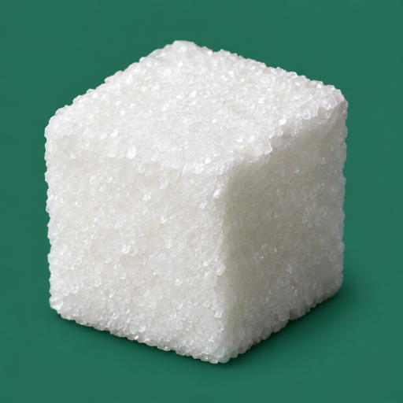
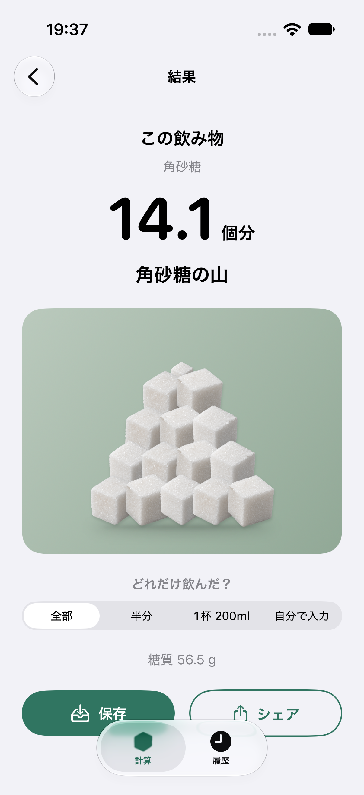
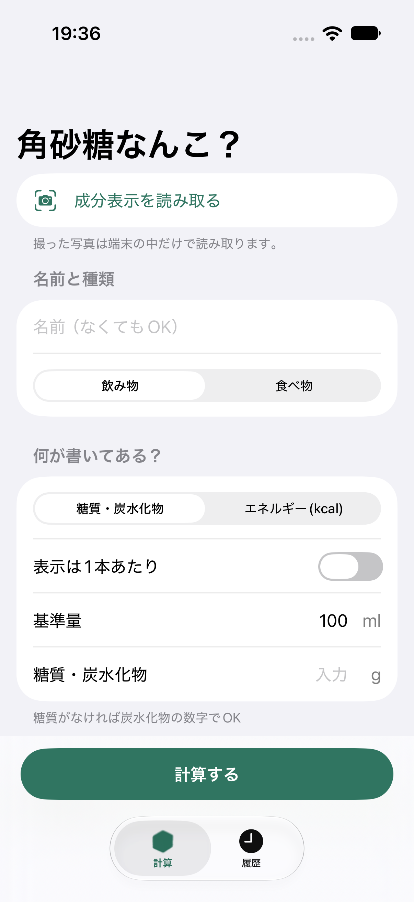
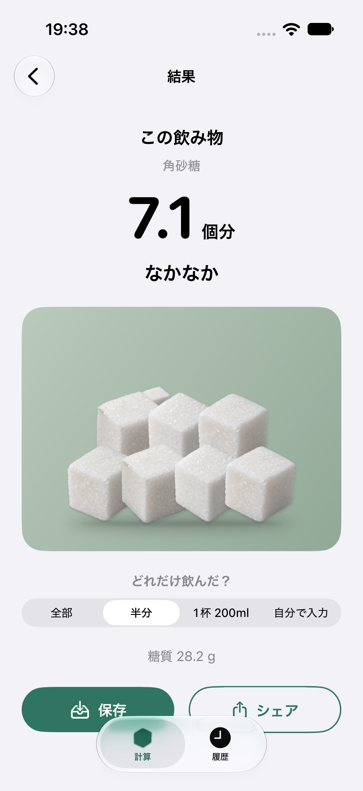
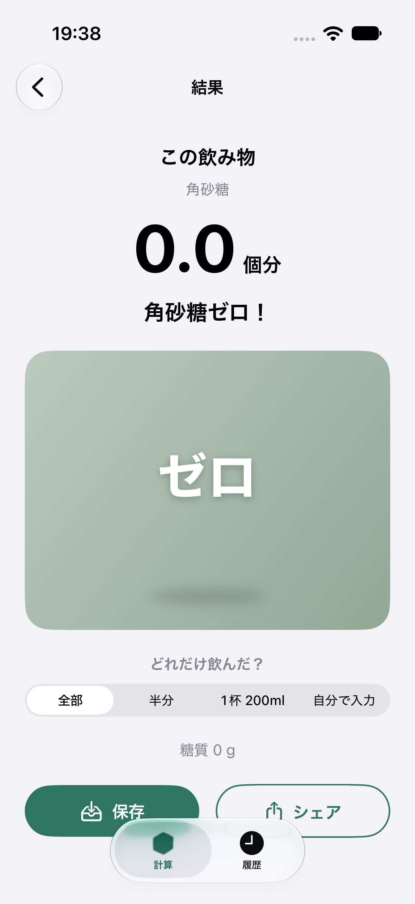
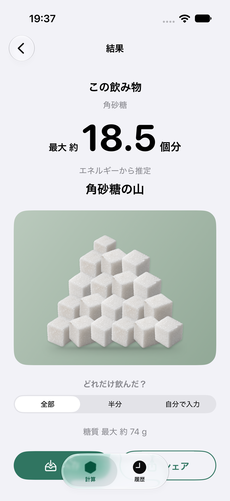
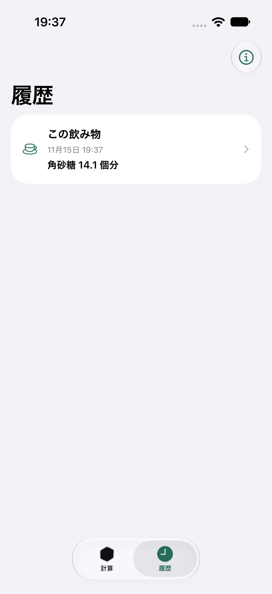
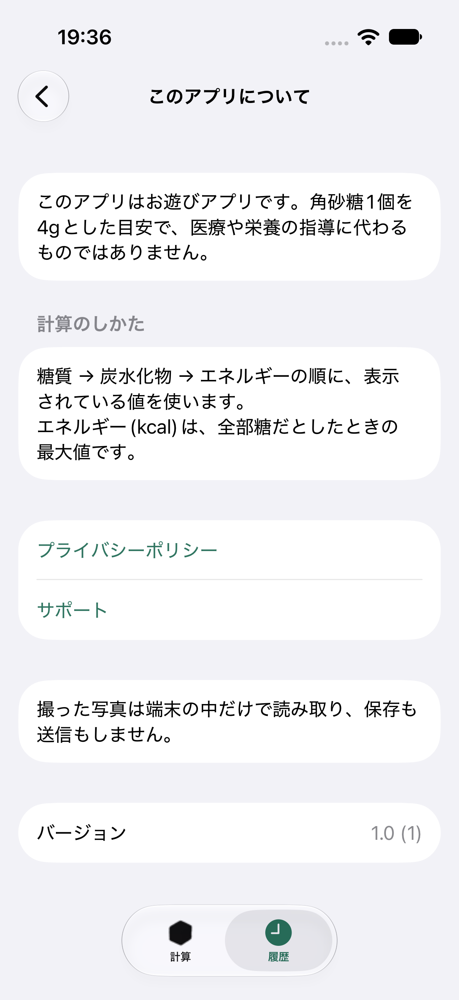

成分表示を読み取り
カメラで撮るか写真を選ぶと、糖質・炭水化物・エネルギー・内容量を端末内で読み取って入力。商品データベースは使いません。

SUGAR CUBES? / 角砂糖なんこ？飲み物や食べ物の成分表示から、糖質が角砂糖何個分かを計算。写真みたいな角砂糖が落ちてきて、山になる。ちょっと笑えるお遊びアプリです。

いつもの飲み物や食べ物を、角砂糖の山にして見てみよう。
カメラで撮るか写真を選ぶと、糖質・炭水化物・エネルギー・内容量を端末内で読み取って入力。商品データベースは使いません。
角砂糖1個は4g。写真風の角砂糖が落ちて積み上がり、端数は小さなかけらに。糖質0なら「角砂糖ゼロ！」です。
全部・半分・1杯200ml・自分で入力から選んで、飲んだ量に合わせた結果を見られます。
結果を履歴に保存して、あとから見返せます。角砂糖の山は画像でシェア。ログインは不要です。
実際のアプリ画面です。成分表示の入力から、角砂糖の山、履歴まで。






糖質 → 炭水化物 → エネルギー（kcal）の順に使います。kcalの場合は「全部糖だとしたら」の最大値として「最大 約」と表示します。
お遊びアプリであり、医療や栄養の指導に代わるものではありません。
使い方、よくあるご質問、お問い合わせ。結果画面と履歴画面にはGoogle AdMobのバナー広告を表示します。